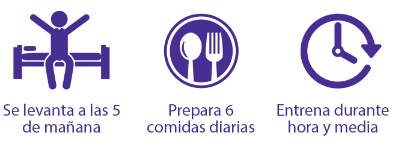

Luz Elena Echeverría
Por: Jerrika Lozano
Agradecemos a:
MARIA CARIOCA FIT
por el vestuario visítalos en Instagram
@mariacariocafit y en su sitio web
www.mariacarioca.com.co
FIT FOR ALL
por la locación,
Calle 94 No. 13 – 11
Visítalos en:
Instagram: @fitforallgym
Facebook: Fit For All
 @lucecitaecheverria
@lucecitaecheverria
Con amor al deporte esta mujer ha practicado atletismo, voleibol y un sin número de disciplinas.
Desde los 13 años inició una relación de amor con el deporte practicando más de tres disciplinas diferentes, experimentando su resistencia y agilidad en cada uno de ellos, al pasar el tiempo y después de tener a su hija, su cuerpo cambió drásticamente por lo que, se dedicó a asistir al gimnasio; no tardó mucho tiempo en sentir que ese era su lugar, para empezar a transformar su cuerpo hasta llegar a un nivel competitivo.
“Lucecita” como le gusta que la llamen sus amigos y seguidores da asesorías online en temas de alimentación y entrenamiento a personas dentro y fuera del país.
En hábitos alimenticios Luz Elena recomienda tener un equilibrio “no se trata de quitar, hay que encontrar armonía” todos sabemos que hay días que queremos cosas fuera de la dieta en este caso Lucecita aconseja: “si quieres darte un gusto hazlo”.
Lo que recomienda es, entre semana después de medio día no se deben consumir harinas, dulces, ni comida chatarra esto ayudará a mantener la línea.

{kind=link}
{kind=link}
{kind=link}
Uno de los planes de entrenamiento que más le funciona son las pesas combinadas con cardio, esto la ayuda a estar tonificada.
El mayor logro de esta entrenadora personal fue competir cuando su hija solo tenía año y cinco meses, quedando en segundo lugar en el Megaplex Star Fitness Model, que se llevó a cabo en Barranquilla en 2015, también ocupó el tercer lugar a nivel mundial en Mr. Olympia Amateur Wellness. No podemos dejar pasar la participación de Luz Elena en el Desafío Súper Humanos, desde su experiencia asegura que el tipo de entrenamiento al que se enfrentó era algo a lo que no estaba acostumbrada, “trabaja fuerza pero lo que son actividades cardiovasculares no lo había hecho jamás por lo que le fue muy difícil sumado a la carencia de alimentos, y la falta de energía” lograr superar las pruebas y quedarse más tiempo le fue muy difícil.
A final del día la mayor satisfacción de “Lucecita” es su hija, quien a su corta edad imita a la perfección sus poses, y pregunta cuándo va a tener edad suficiente para acompañarla a entrenar, desde ya esta pequeña lleva una alimentación muy sana y espera pacientemente seguir los pasos de su mamá.
“Lucecita te recomienda actuar, moverte, buscar un lugar que te agrade para entrenar ya sea en interiores o exteriores”.
Pero no se preocupen esto no detiene a esta encantadora costeña; en poco tiempo podrán disfrutar de una línea de cremas anti celulíticas, anti estrías y tonificantes que son específicas según las necesidades de cada persona (las que quieren adelgazar, para aquellas que quieran mantenerse y atletas de alto rendimiento).